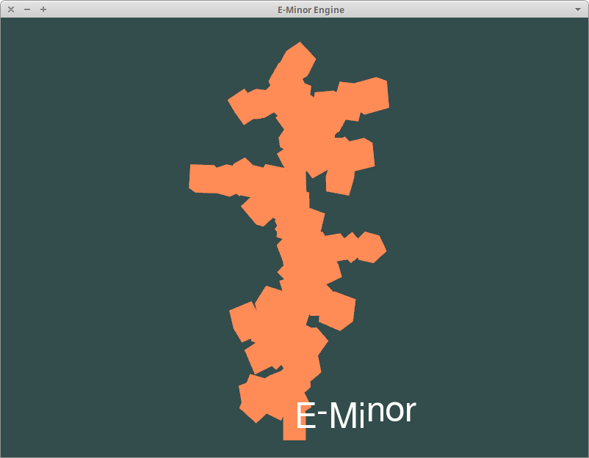

Milestone Report
Abstract
For our CS184 final project we decided to try implementing a simple game engine, capable of running simple real time graphics and game mechanics. We hoped to try mimicking a scaled-down version of Unreal or Unity, with the capability to drag assets into a scene. In particular, we wanted to try implementing light effects such as god rays and vignetting effects. Although our initial goal was quite optimistic in its scope, we were able to create a functional game with simple gameplay and features such as procedurally generation, glowing lights, and camera tracking.
Technical Approach and Implementation Results
The bulk of this project was done using OpenGL and several supporting frameworks. We used GLFW for windows and context creation as well as keyboard input, GLM for mathematical operations such as vectors and matrixes, ASSIMP to load models, SOIL to load textures, and FreeType for text rendering. The LearnOpenGL tutorials were a significant resource in accomplishing our objectives.
Our code was split into several major components. There were the framework dependencies, and we also borrowed a Camera class to help abstract the camera functions from the LearnOpenGL tutorials in addition to a Shader class that provided OpenGL's shader program functionality. In addition, we wrote an Engine class that handled the core GLFW loop in addition to any window callback functions such as keyboard input or mouse movement. The Engine also handled updates for any geometry positions, such as variables that determined the hovering up and down movement of the emmissive cubes along with the procedural generation functions. The Engine class also contained an instance of a Renderer class we wrote, which handled all the drawing and shaders of geometry as well as text. A pointer to a camera was created in the Engine class and passed to the Renderer for use in calculating the model-view-projection matrixes.
We also wrote a small function in a Texture header that would load textures through SOIL and return the ID from successfully binding it as an OpenGL texture. Both the Shader and Texture class were modified slightly to allow us to write only the file name instead of the full string path when loading a resource. We also created a few custom textures for use in the game and shaders for lighting tests.
Primitives / Shaders / Textures
Shaders are written in GLSL. In order to achieve interesting surfaces we used vertex and fragment shaders. A vertex shader is used on every vertex, and can change the attributes of a mesh’s vertices. The fragment shader takes care of the pixels, controlling what the in-betweens of the vertices. They are interpolated between the defined vertices following specified parameters. These shader will be better reflected with the lighting we have in the scene.
Shaders are fun, but as any primitive engine, we wanted to be able to load our own textures into the picture. We used SOIL, the Simple OpenGL Image Library. This library will take in one of our images, and generate the texture for a specified mesh. The vertex shader accepts the texture coordinates, and then forwards the coordinates to the fragment shader. The texture is bound to the mesh, and there are a few options. We were able to decorate our cube meshes with basic square textures. We were able to load models with Assimp, however we wanted to focus more on getting our mechanics done, and briefly played with premade .obj models.


Camera
The LearnOpenGL tutorials provided a camera class that we incorporated into the engine. It is capable of responding to mouse movement and scroll wheel movement as well as the WASD keys to move in the XZ plane. This was done through several vectors that recorded information about the camera, such as its current position, a representation of the forward, upwards, and rightward directions, and the Euler angles (Yaw and pitch. Roll was not included because the camera is not capable of behaving in such a way). We also added the capability to move vertically on pressing the Z and C keys.
Gameplay
As soon as all the basic primitives could be set up, the next step was adding a playable character. So to begin we had one textured cube serve as the agent. Its position was determined relative to the camera. As the camera moves around the scene, the cube moves directly in front of it, maintaining a 3rd person point of view. This is done by simply taking a unit vector of the camera's forward direction, multiplying it by a scalar, and adding it to the camera's position vector.

The game we had in mind is as follows: under a minute, a character must try to eat up as many light emitting cubes as possible. These emissive cubes had slight vertical translational motion to signify that they were ready to be eaten. Additionally, the position for these lights were randomly generated. Random color values for the lights were also generated, to give the feel of a new game with each spawn. We set up a distance formula that would determine if our character was near a cube. Upon contact, the cube would disappear and give our player another point.
This is a cute attempt, but there wasn’t much drama. So to introduce some adversary play: I (Ricky) introduced more random lights, who unlike the other cubes, remained stationary (i.e. no vertical motion). These few random lights would actually slow down the movement of the character, and thus hamper the amount of lights the character could obtain under a minute. This was introduced to trick the careless player into eating these, since the faster the player moved, the less likely the player would be able to distinguish which cubes are the booby traps. In harder levels, the cubes will move very slowly, such that, if really careless, the player would not be able to distinguish the moving cubes from the stationary cubes.
Lighting
In OpenGL, lighting can be achieved through vertex shaders and fragment shaders. The LearnOpenGL tutorials provided a couple shaders with interesting effects such as bloom, fringes of light around the borders of bright areas in an image. We attempted to implement our own shader to draw a vignette onto the screen. The algorithm would be as follows:
Using color and texture coordinate inputs from the vertex shader, sample the texture for a texture color. Then, determine the distance of the current vertex position from the screen center. This was calculated with the equation vec2 pos = (gl_FracCoord.xy / screen_size.xy) - vec2(0.5, 0.5), where vec2(0.5, 0.5) represents the screen center in OpenGL's window coordinates. The length of this vector determines how far away from the center the current vertex is, which we use to perform Hermite interpolation with a user specified inner and outer radius of the vignette. Finally, we mix the sampled texture color with itself but scaled by the value we calculated from interpolation.
Unfortunately, we had a lot of trouble understanding how OpenGL fed inputs to the shader, particularly how to set up vertex layouts such that the shader could read data correctly from them. As a result, we did not complete the vignette effects. We would otherwise have also tried implementing god-ray effects through another shader.
Text
Text was implemented through the FreeType library. FreeType provides an interface to access the content of font files, leaving the implementation of the actual graphics processing up to the user. In our case, we took the TrueType FreeSans font from Ubuntu's default fonts.
The method for rendering text is as follows: using the FreeType Glyph structure, attempt to load the character at the current slot. If successful, we proceed to render the character. We create a vertex buffer object representing its corner coordinates and use the OpenGL function glTexImage2D to create a texture for our character, with the buffer data provided in the glyph. Using a set of vertex and fragment shaders provided by LearnOpenGL tutorials, we can draw the text texture. Finally, advance the pen (the coordinates of where the letter is being drawn) forward by the increment provided by the glyph slot.
There was an issue in that we drew the characters beginning from their top left coordinate. As a result, the letters are shifted upwards when there are inconsistent heights, which is particularly noticeable in the picture on the right below.
|

|

|
Procedural Generation
We wanted to incorporate some procedurally generated elements in order to be able to create varied and unique environments on each round of play. To simplify things, we only considered using the cube primitive as the model base. Then, we created several functions that would specify a particular layout for the calculating the positions of the cubes. Initially, this was done through using a function pointer and an enum class to swap out the particular generation function desired. Later, the inputs were changed slightly so that the base of the structures could be positioned randomly, so the function pointer was done away with in favor of a simpler if-else statement.
We implemented three functions to generate structures of cubes. The first two were relatively simple horizontal or vertical towers. This was done by choosing start coordinates and then iterating over a particular axis. For example, a vertical tower was constructed by randomly selecting x and z coordinates and then incrementing the y coordinate by one for each cube. The third generation function was more complex, with the goal being to create structures with a visual appearance similar to trees. To do this, first we scattered several vertical towers randomly about the scene. Then, going from bottom to top, we placed cubes in a direction perpendicular to the tower and recursively called the branch with progressively lower seed counts, with a chance to randomly terminate that was inversely proportional to the seed number. As we expanded along the branch, we also included a random chance to grow in a direction orthagonal to the branch as well.
|
|
|
|
|

|
We also looked into possibly using geometry shaders as an alternative method of outputting new primitives, but we weren't able to figure out how to correctly link the input parameters to the shader.
Video Clips
Procedural DemoGameplay
Final Remarks


This was a lot of work, to say the least. It was a very rewarding challenge to embark on. OpenGL is something both of us have been wanting to explore, so this project was a great way to fulfill that. Both of us are quite invested in computer graphics for animation, and it was a good change to try and learn more about the real-time side of the spectrum.
My (Ricky's) copy of Game Engine Architecture should be arriving very soon.
Unfortunately, due to limitations on our time as well as unexpected difficulty with compiling the project dependencies and cross platform compatibility, we were not able to add as many features as we would have liked. However, this project has taught us a lot about low-level graphics programming and we have each gained a massive appreciation for the technical prowess and effort that is required for game engine development. We hope that we can continue to extend and improve upon this project in the future.
References
Learn OpenGLVignette Shaders
FreeType Tutorial
GLFW
Contributions
Ricky:
Implemented the gameplay components, texture mapping, and basic lighting. Researched OpenGL areas and created presentation slides and video footage.
Kyle:
Set up OpenGL project framework and reworked code into separate files based on class functionality. Created procedural generation and text rendering code, attempted vignette shaders.